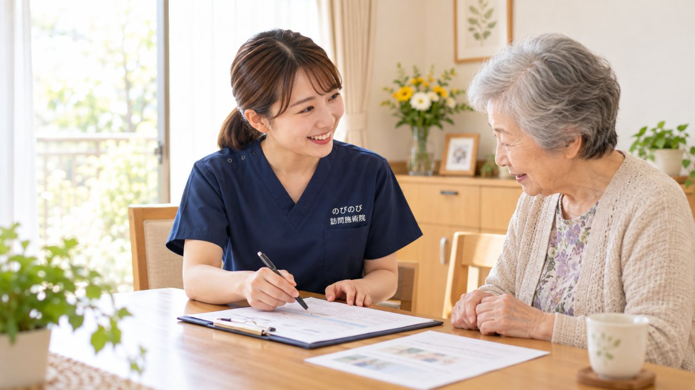

訪問鍼灸マッサージで何を相談できるのか、記事の数が増えるほど探しにくくなってきました。そこで、これまでご相談をいただいてきた症状を、体の部位ごとに並べ直しました。ご自身やご家族の状態に近いところから読んでいただければと思います。どの部位でも、原因の見極めは医師の役割で、当院が受け持つのはそのまわりでこわばった筋肉と、動かせる範囲のほうです。
この記事のポイント
このページは症状ごとの記事を部位別に探すための一覧です。はり・きゅうの施術が医療保険（療養費）の対象になるのは、慢性的な痛みやしびれ、麻痺にともなうこわばりについて医師が施術を必要と認めて同意した場合で、自己負担は1割の方で1回およそ395円が目安です。けがの直後、急に強く痛み出したとき、手足に力が入らないとき、発熱をともなうときは、施術より先に医療機関で確かめてください。持病や体の状態から探したい方は、「持病や体の状態から探すページ」をご覧ください。
まず、どこがつらいかを教えてください
訪問でうかがうとき、最初にお聞きするのはここです。どこが、いつ、どんなふうにつらいのか。それが分かると、確かめる場所も、触る順番も決まってきます。逆に「なんとなく体全体が」という言い方から始まって、話していくうちに「そういえば右の膝だけ立ち上がるときに」と出てくることもあります。どちらでも構いません。
以下は、これまでご相談をいただいてきた部位ごとの一覧です。ご自身やご家族の状態に近いものから読んでいただければと思います。どれにも当てはまらないと感じられたときも、お問い合わせのときにうかがいますのでご心配なく。
お尻から脚・足のつらさ
訪問でいちばん多いのがこの範囲です。歩くこと、立ち上がること、階段を上り下りすることに直接ひびくので、暮らしの範囲がせばまりやすいところでもあります。痛い場所と原因のある場所がずれることも多く、膝が痛いのに股関節やふくらはぎが張りつめている、ということがよく起こります。
- 巻き爪・肥厚した爪など足のトラブル
- 足底腱膜炎・かかとや足裏の痛み
- 足首の痛み・動かしにくさ
- お尻の奥・骨盤まわりの痛み
- 足の指の付け根の痛み・しびれ
- 足首の痛み・捻挫のあとの不安定さと在宅ケア
- 変形性膝関節症で膝が痛い・変形する
- 起き上がり・立ち上がりがつらい高齢のご家族へ
- 外反母趾など足の変形で歩きにくいご高齢
- 足のむくみに
- こむら返り
- 神経痛は保険で受けられる？坐骨神経痛など神経の痛み・しびれと
- むち打ち
- 膝の痛みで立ち座りがつらい高齢のご家族へ
- 坐骨神経痛で歩くのがつらい高齢
- リンパ浮腫・腕や脚のむくみ
- 少し歩くと足がしびれて休んでしまう高齢のご家族へ
背中・腰のつらさ
腰は、ほかの部分をかばった結果として痛むことがよくあります。背中の丸まりが進んでいる方は、倒れきらないよう腰が一日中引っぱられています。骨がもろくなって背骨がつぶれていることが背景にある場合もあり、そこは整形外科で確かめる必要があります。
- 骨がもろくなると背中は丸くなる？骨粗鬆症と円背のつながり
- 亀背は治りますか？曲がった背中が戻るかと、今できること
- 円背とは？背中が丸くなる原因と、放置したときに起こること
- 寝て過ごす時間が長い高齢の方の、肩甲骨まわり・背中のはりと在
- わき腹・背中の刺すような痛み
- 背骨が左右に曲がる
- 円背と亀背の違いは？背中が丸くなる原因と、自宅でできるケア
- 長引く腰痛症は保険で受けられる？訪問鍼灸の料金と受診の目安
- 背骨の圧迫骨折のあとの痛みとケア
- 腰椎椎間板ヘルニアの足の痛み・しびれ
首・肩・腕のつらさ
腕が上がらない、着替えがしにくい、洗髪ができない。肩の動きは毎日の身支度に直結します。首から腕に走るしびれは、首のあたりで神経が圧迫されて起きていることもあるので、力が入らない・感覚がおかしいといったときは受診が先です。
- 五十肩とは違う肩のトラブル
- 胸郭出口症候群・腕や手のしびれ
- 変形性肩関節症・肩が上がらない
- 変形性頸椎症で首の痛みや動かしにくさがある
- 首が下がる・体が前に倒れる
- あごの痛み・口の開けにくさ
- 首・肩・腕のしびれや痛みが続く
- 首・肩のこりや腕のしびれがつらい高齢
- 五十肩・肩の痛みで腕が上がらない高齢のご家族へ
手指・手首のつらさ
細かい動作ができなくなると、食事や着替え、ボタンの留め外しといった場面で手がかかります。指の関節が太くなったり曲がったりしてくる変化は、リウマチとは別のものであることもあります。見分けは医師の領域です。
関節の変形・こわばり
関節そのものの形が変わってしまったものを元に戻すことはできません。できるのは、そのまわりでこわばっている筋肉をゆるめ、動かせる範囲を保つことです。動かさない時間が長いほど固まっていくので、早い段階から手を入れておく意味があります。
骨折・手術・退院のあと
治療とリハビリが土台で、そこは医師と療法士が中心です。訪問鍼灸マッサージが受け持つのは、その前後で固くなっていく筋肉と関節、そして落ちていく体力のほうです。入院中は毎日あったリハビリが家に帰ると減る、その空いた時間をどう過ごすかに関わります。
神経の痛み・全身の痛み
刺すような痛み、焼けるような痛み、あちこちが痛むという訴え。原因の見極めは医療機関の役割です。そのうえで、痛みをかばって固まった部分をゆるめることはできます。
持病や体の状態から探したいときは
心臓や腎臓の病気がある、飲み込みにくい、麻痺がある、医療的ケアを受けている。そうした体の状態から探されるほうが分かりやすい場合は、「持病や体の状態から探す｜訪問鍼灸マッサージでできること」で詳しくご紹介していますのでそちらをご覧ください。地域ごとのご案内は「訪問鍼灸マッサージはどこまで来てもらえる？」にあります。料金や同意書、介護保険との関係といった制度の疑問は、「よくある疑問｜料金・同意書・制度から記事を探す」で詳しくご紹介しています。
先に医療機関へ向かってほしいとき
どの部位であっても、次のようなときは施術より先に受診してください。けがをした直後。急に強く痛み出した。手足に力が入らない、感覚がおかしい。発熱をともなう。じっとしていても強く痛む。体重が減ってきた。尿が出にくい。こうしたときは、画像や検査で確かめられるのは医師だけです。
当院にご相談いただいた場合も、こうした様子があれば受診をおすすめし、状態が落ち着いてからの施術をご案内します。診断を差し置いて施術を始めることはしません。
費用は保険で、1回約395円から
はり・きゅうの施術が医療保険（療養費）の対象になるのは、慢性的な痛みやしびれ、麻痺にともなうこわばりについて、医師が施術を必要と認めて同意した場合です。療養費の対象として定められているのは、神経痛・リウマチ・頸肩腕症候群・五十肩・腰痛症・頸椎捻挫後遺症の6つです。
費用は1回の総額3,950円に対し、自己負担は1割の方で約395円。週2回なら月あたりおよそ3,160円が目安です。要介護認定は必要ありません。内訳は料金はいくら？医療保険の自己負担額と仕組み、同意書の頼み方は「かかりつけ医への頼み方と流れ」をご覧ください。
はじめての方には無料体験をご用意しています。どこがつらいのかがはっきりしない段階でのご相談も承ります。
よくある質問
どの記事を読めばいいか分かりません。
部位が思い浮かぶなら、その見出しから探してみてください。はっきりしない場合は、お問い合わせのときにうかがいます。話していくうちに「そういえば右の膝だけ」と出てくることもよくありますので、整理できていない状態でご連絡いただいて構いません。
ここに載っていない症状でも相談できますか？
できます。一覧は、これまでご相談の多かったものを並べたものです。当てはまるものがなくても、体の状態をうかがってご説明しますので、まずはお聞かせください。
いくつも痛いところがあります。全部みてもらえますか？
その日の状態を見て、どこから手を入れるかを決めます。保険で算定できる部位の数は医師の同意書にもとづくため、すべてを同じ日に同じだけ扱えるとは限りません。何をどう組み立てるかは、体を見せていただいたうえでご相談します。
痛みの原因を診断してもらえますか？
診断は医師の役割です。当院が行うのは、こわばっている場所を確かめて手を入れることと、受診したほうがよい様子に気づいたときにお伝えすることです。
保険が使えるのはどんな症状ですか？
療養費の対象として定められているのは、神経痛・リウマチ・頸肩腕症候群・五十肩・腰痛症・頸椎捻挫後遺症の6つです。ご相談が多いのは、脳梗塞のあとのこわばりや麻痺、膝や腰の痛み、手足のしびれ、パーキンソン病にともなう動かしにくさです。
対応しているのはどの地域ですか？
大阪府では豊中市・吹田市・茨木市・高槻市・箕面市・摂津市・池田市、大阪市では淀川区・東淀川区・都島区・北区・旭区、兵庫県では尼崎市・伊丹市にうかがえます。エリア内は別途の出張費がかからず、どこでも同じ料金です。